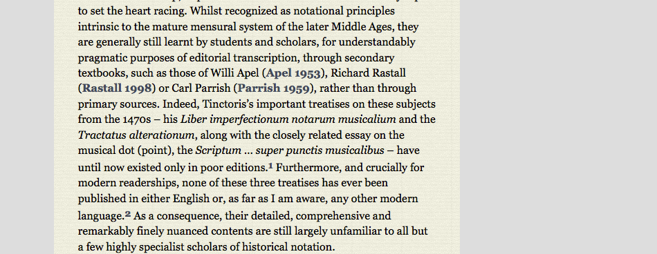

  <div class="content">
  	<div class="contentbox">
      <div class="explanation navigation">
          <div class="explanation-row">
            <div class="cell"></div>
            <div class="cell"><a href="../#">Up (website guide)</a></div>
            <div class="cell"></div>
          </div>
        <div class="explanation-row">
          <div class="cell"><a href="../Articles/1.html">Back (Articles overview)</a></div>
          <div class="cell"></div>
          <div class="cell"><a href="2.html">Next (bibliography pop-ups)</a></div>
        </div>
      </div>
      <h3>Articles and other information pages: Bibliographic references</h3>
      <p>Bibliographic citations are presented in a standard
        (<span class="mock-a">author year</span>) format. Hovering over
        any one of these makes a <a href="2.html">fuller reference
      appear in the right-hand margin</a>.</p>
      <div class="helpshot h950">
        
      </div>
      <!--end .contentbox -->
  	</div>
    <!-- end .content -->
  </div>
